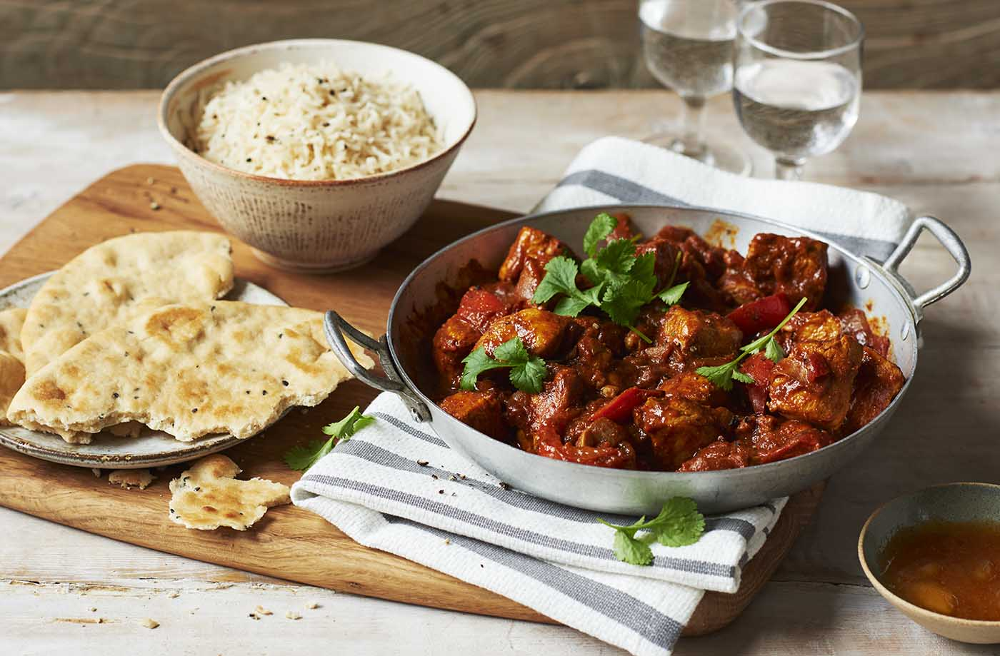
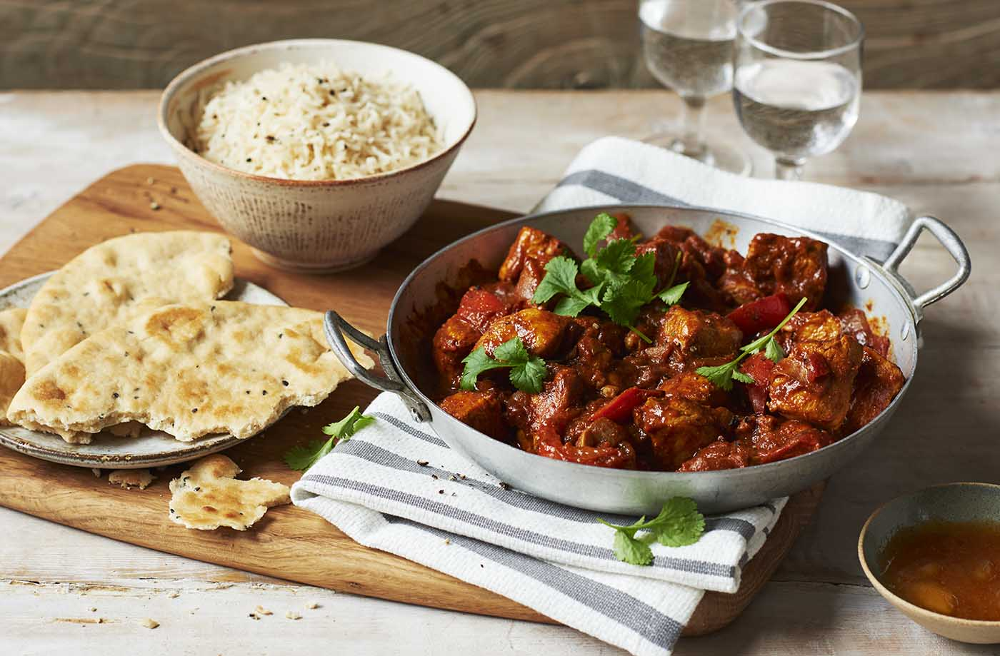

 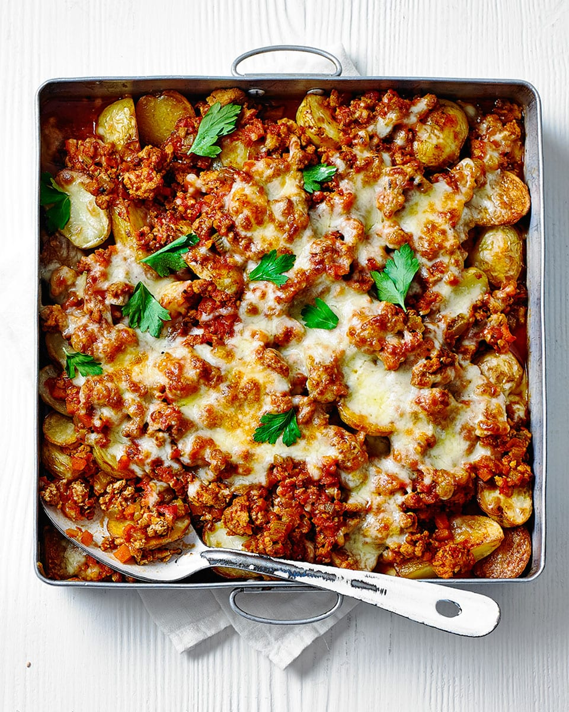
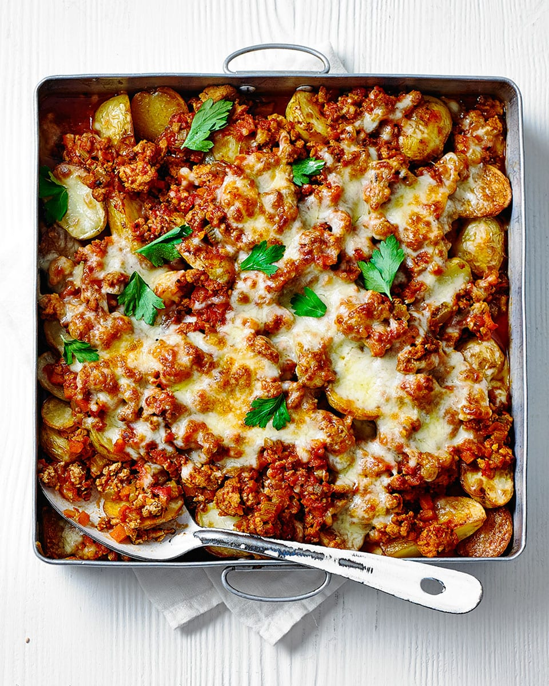


Find the perfect recipe using the ingredients you have at home.


 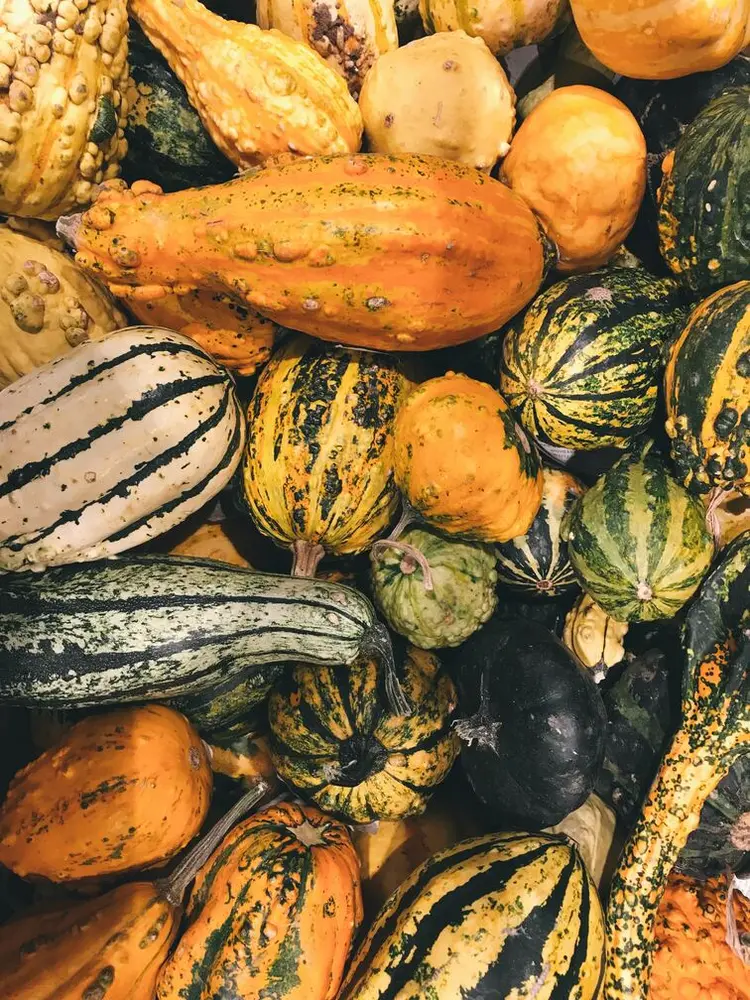
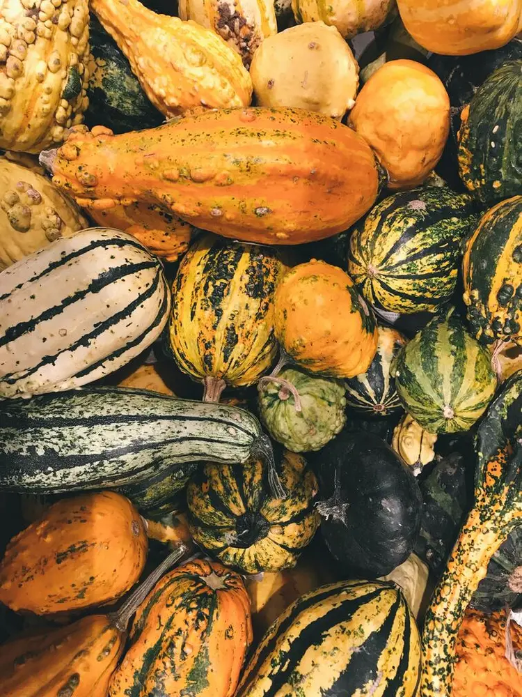
 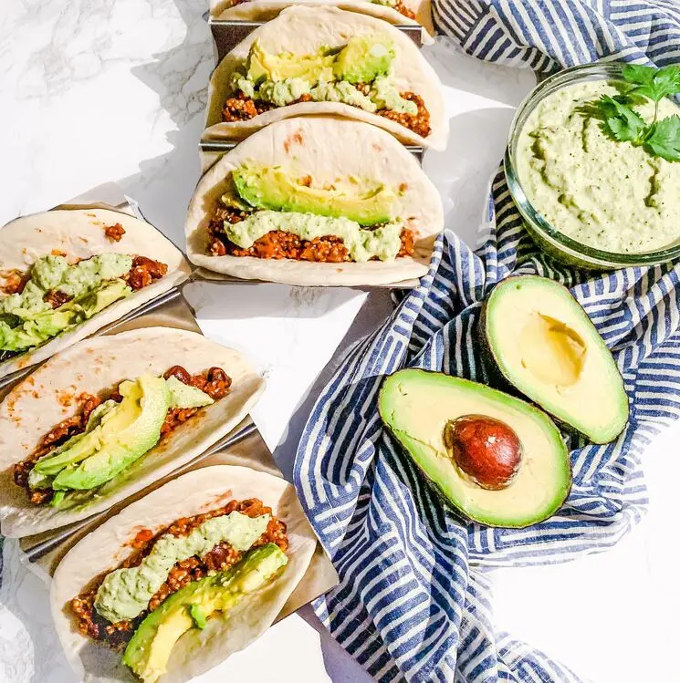
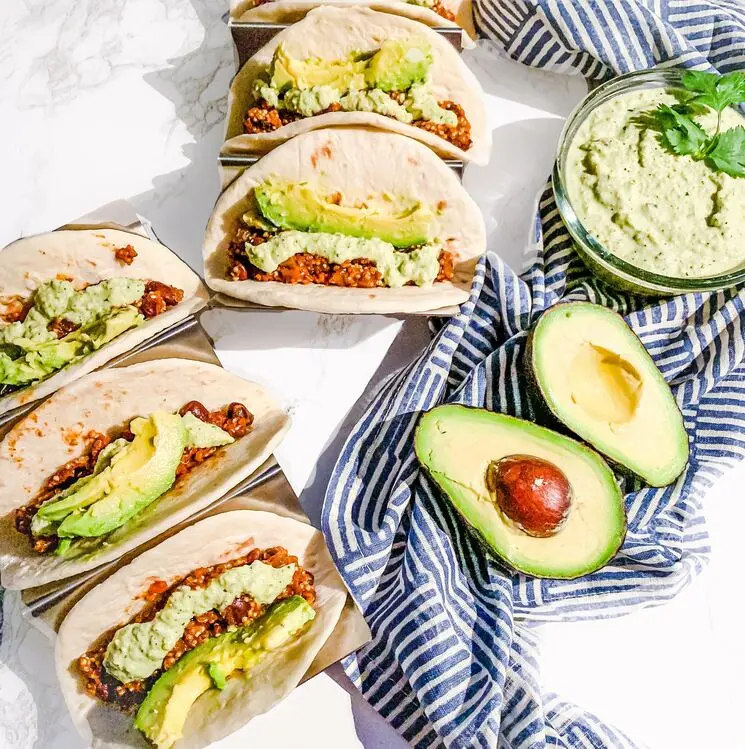
 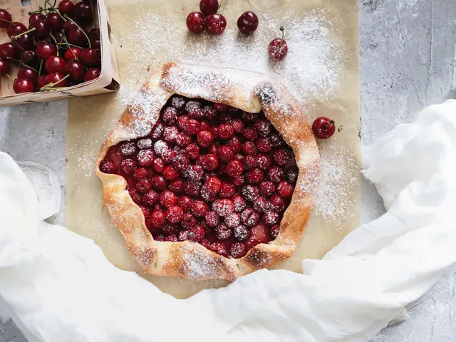
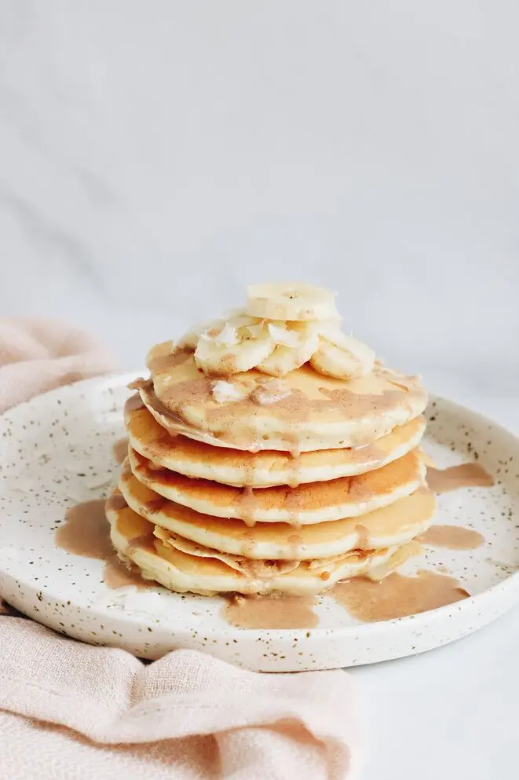
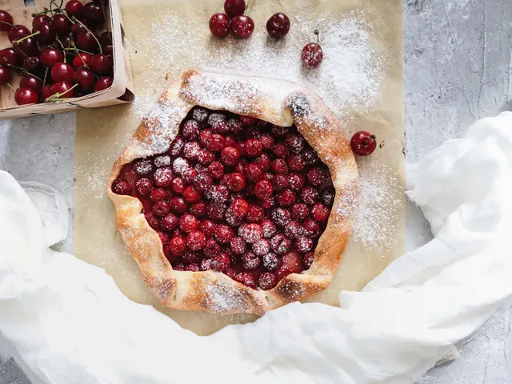
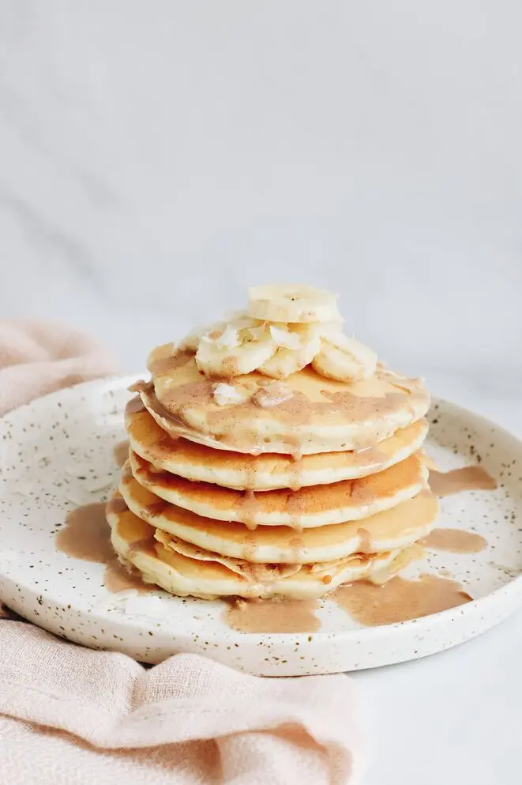


Enter the items in your fridge and pantry
Salt
Garlic
Milk
Eggs
Plain Flour
Butter
Rice
Lemons
Bread
Vegetable Oil
Red Chillies
Honey
Olive Oil
Granulated Sugar
Chicken Stock
Cucumbers
Spaghetti
Chopped Tomatoes
Apples
Parsley
Carrots
Bananas
Cheddar
Coconut Milk
Thyme
Broccoli
Tomatoes
Based on popular searches
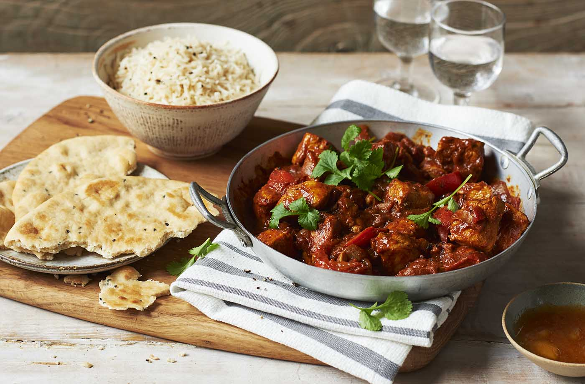
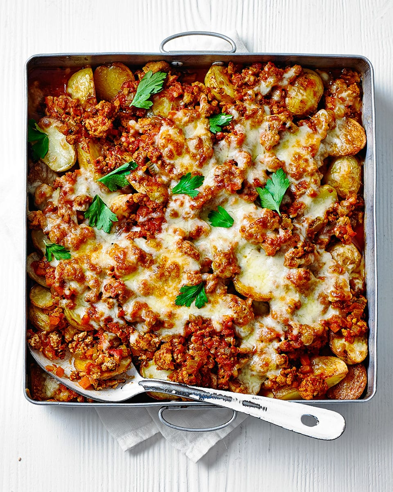